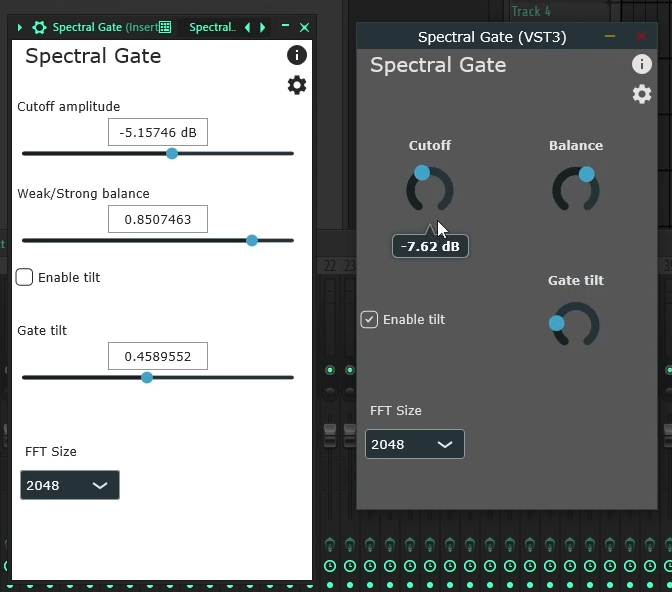

Hi, I am Mišel Širovnik.
Integration Engineer · Requirements & Releases
Integration Engineer in Graz who sits at the intersection of development, clients, and operations. I build and deploy Java, .NET, and AWS solutions, but I equally focus on refining business requirements into clear technical specs, orchestrating low-risk releases, and ensuring reliable delivery for live systems. My technical background is my foundation, but my greatest strength is communication: asking the right questions, keeping stakeholders aligned, and making sure deployments never come as a surprise. Former IT teacher and community organizer, so I excel at translating technical constraints for non-technical audiences.
Experience
Integration Engineer
Beyond Now | Oct 2025 – Present | Graz (hybrid)
- Develop and deploy Java-based middleware on AWS (ECS, Lambda, API Gateway, CloudFormation) with Datadog and CloudWatch monitoring.
- Act as the technical buffer for the Product Owner, refining client requirements (BRDs) and Jira tickets to clarify technical feasibility and scope before development begins.
- Own release scheduling for a major client product (1-2 releases/month) and two internal products, plus that client’s environment upgrades; coordinate timing, dependencies, and pre-release risk checks (e.g., smoke tests).
- Provide rapid-response support for live integration incidents, consistently achieving sub-hour response times and same-day resolution.
IT Educator & Support
Biotehniški izobraževalni center Ljubljana | Nov 2024 – May 2025
- Taught IT subjects to high school students, including networking fundamentals, with a focus on building real interest in technology.
- Started and ran a computer science extracurricular activity, mentoring a student on their own IT project, secured funding for it from the administration, and coached them to research and solve problems independently.
- Provided in-house IT support: hardware troubleshooting and maintenance of school equipment.
C#/.NET Backend Developer
Metronik | Aug 2022 – Aug 2024 | Ljubljana
- Designed and implemented .NET/C# backend features in the pharmaceutical industry, starting every new requirement from relevant ISO standards.
- Maintained, debugged, and optimized legacy software and relational database structures (SQL), ensuring high performance for critical client operations.
- Extended middleware to improve communication between disparate software platforms, working closely with QA testers to diagnose and resolve complex integration issues.
- Authored clear, user-focused technical documentation to support ongoing maintenance and client onboarding.
Software Developer (Freelance)
Društvo Duh Časa | Mar 2020 – Aug 2020 | Remote
- Extended and improved features of an internal inventory management web application using PHP and MySQL.
- Modified the MySQL schema and wrote migration scripts to keep data intact through updates.
- Built a more responsive, user-friendly interface with HTML, CSS, JavaScript, and Bootstrap.
Beyond Code
🛠️ Tech Community Leadership
Co-Founder & Secretary, LeftClick Hackerspace
- Co-founded a non-profit hackerspace promoting open-source collaboration and handled its organization as secretary.
- Hosted the "Geekend" tech event with Graz's realraum hackerspace as guest presenters.
- Refurbished 10+ computers with Linux for community donation.
🎉 Event Production & Coordination
Electronic Music Events (2016-2020)
- Planned and ran 10+ events for 100-300 attendees, coordinating venues, artists, and teams.
- Negotiated contracts with venues and artists.
- Solved real-time crises (equipment failure, scheduling conflicts, compliance issues) under pressure.
🎓 Teaching & Mentoring
High School IT Educator
- Explained networking and IT fundamentals to teenagers, which taught me to break complex topics down for any audience.
- Mentored a student through their own project, from securing funding to independent problem solving.
🤖 International Robotics Competitions
RoboCup Junior Simulation League (2019)
- 6th Place globally in Sydney
- 3x National Champion
- Algorithm development under competition constraints
🎮 Fueled Game Jams with Sound
Collaborative Sound Design
- Created SFX/music for 3 competition entries.
- Worked under week-long deadlines with remote teams.
Projects
🔧 Self-Hosted Infrastructure
Docker-based home server on a public domain with automated networking. Runs Nextcloud, Firefly III, and an MCP server connecting local data to an AI assistant.
- Docker
- Networking
- MCP
🔧 GitLab API template
Scalable API template with automated cloud deployment pipelines.
- AWS
- Docker
- GitLab CI/CD
- C#
🔧 SLObcina: Municipal Planning
Digital platform connecting Slovenian citizens and municipalities through proposal submission, voting, and official alerts.
- Javascript
- Project Management
- HTML
- CSS

🎨 VST Plugin UI Overhaul
Redesigned interface for open-source audio plugin bundle. Addressing compatibility issues before open-sourcing.

- JUCE
- C++
- UI/UX
🧠 prev22 Language Compiler
Full compiler implementation with lexing, parsing, and code generation.
- Java
- ANTLR
Education
University of Ljubljana, Computer and Information Science
Coursework completed, bachelor's thesis in progress (expected 2027).
Skills
Process & Release
- Requirements Refinement
- Release Coordination
- Incident Management
- Agile (Scrum/Kanban)
- Jira & Documentation
Backend & Cloud
- Java & C#/.NET
- Python & SQL
- REST APIs
- AWS (ECS, Lambda, etc.)
- Docker
Tools & Observability
- Git & GitHub/GitLab
- Jenkins & GitLab CI/CD
- Datadog & CloudWatch
- Linux & Networking
Languages
- Slovenian (Native)
- English (Fluent)
- German (A2, improving)